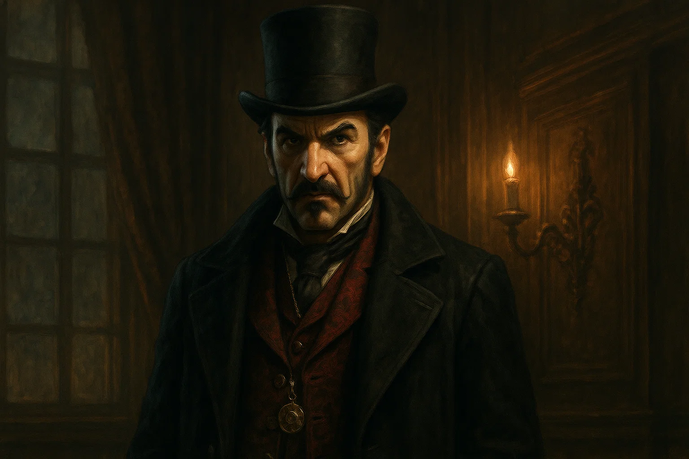

Release Date
October 23, 2015
Platforms
PC, PS4, Xbox One
Setting
London, England
Era
1868 AD
The Fight for London
Set in the heart of the Industrial Revolution, Assassin's Creed: Syndicate lets you play as twin Assassins Jacob and Evie Frye. Liberate London from the grip of oppression and corruption using new tools, gangs, and street smarts. Syndicate brought a gritty, fast-paced edge to the franchise.
Story Highlights
- Play as both Jacob and Evie Frye with unique abilities
- Build and lead the Rooks gang to control London
- Meet historical figures like Charles Darwin and Karl Marx
- Liberate London's boroughs from Templar control
Core Features
Twin Protagonists
Switch between Jacob's brawling and Evie’s stealthy tactics on the fly.
Vehicles & Grapple
Use carriages, trains, and a new grappling hook to navigate Victorian London.
Gang Wars
Lead the Rooks and take down rival gangs to claim control over the city.
Notable Characters

Jacob Frye

Evie Frye

Crawford Starrick
Gameplay Mechanics
Rope Launcher
Traverse Victorian London with the revolutionary rope launcher. Zip across rooftops, create ziplines, and reach new heights faster than ever before.
Gang Leadership
Build and command the Rooks gang. Recruit members, conquer territories, and engage in epic street fights to liberate London from Templar control.
Game Gallery


Legacy & Impact
Assassin's Creed Syndicate brought the franchise to Victorian London with style and innovation. The twin protagonists offered diverse gameplay approaches, while the rope launcher revolutionized traversal. The game's portrayal of the Industrial Revolution, combined with appearances by historical figures like Charles Darwin and Alexander Graham Bell, created a memorable adventure through one of history's most transformative periods.
Liberate London
Lead the revolution and free the streets from the shadows of the Templars.
Play Now